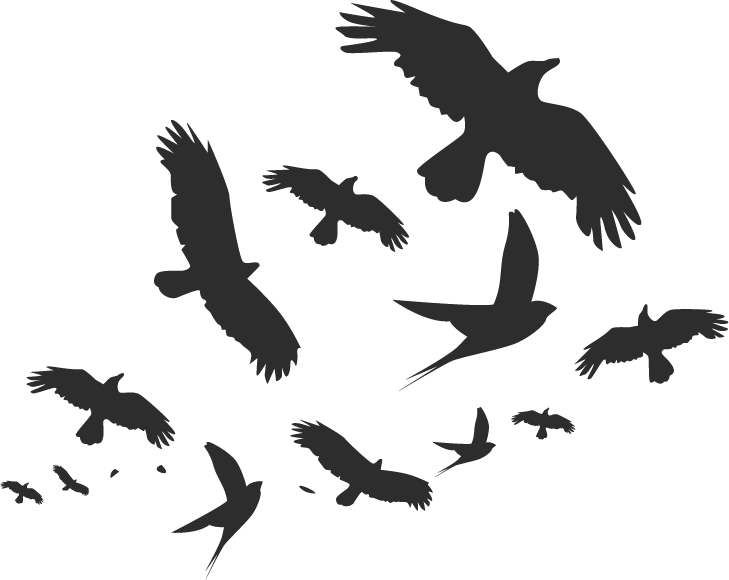
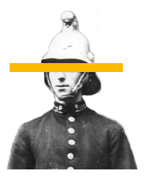
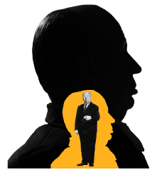
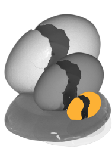
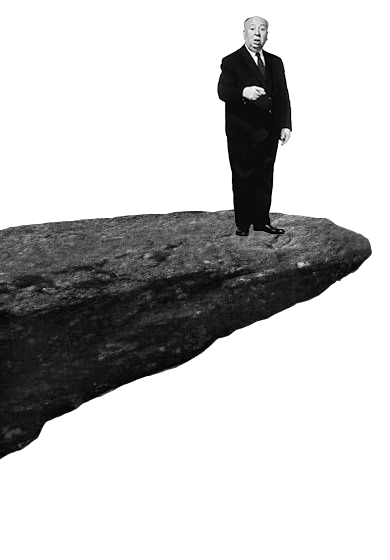

Sir Alfred Hitchcock was een, van origine Britse, Amerikaanse filmregisseur wiens spannende films en televisie programma’s onmetelijke populariteit en goede kritieken verwierven tijdens een lange en productieve cariere. Zijn films zijn onder andere te herkennen aan een macaber gevoel voor humor en een soms wat bleke kijk op de menselijke conditie.

"Happiness is a clear horizon - nothing to worry about on your plate, only things that are creative and not destructive... I think hatred is wasted enegery, and it's all non-productive."
The Twisted Youth
Alfred Joseph Hitchcock werd geboren op 13 Augustus 1899 in Leytonstone een wijk in Londen’s East End. Een plek waar twintig jaar eerder de notoire seriemoordenaar Jack the Ripper had huisgehouden, en waarover nog steeds uitgebreid werd gepraat in Hitchcock’s jeugd. Alhoewel Hitchcock een broer en een zus had heeft hij zijn jeugd vooral als eenzaam ervaren. Hij heeft ooit gezegd dat hij zich niet kon herinneren ooit iemand te hebben gehad om mee te spelen.
"Happiness is a clear horizon - nothing to worry about on your plate, only things that are creative and not destructive... I think hatred is wasted enegery, and it's all non-productive."
The Father
Hitchcock’s vader, William, was kruidenier van beroep, waarmee de familie Hitchcock tot de hoge lagere klasse behoorde in de Victoriaanse maatschappij. Zijn vader was erg strikt in zijn opvoeding. Er gaat een verhaal de ronde dat zijn vader Alfred ooit naar het locale politiestation stuurde met een briefje waarop stond dat hij zich had misdragen en of hij niet een paar minuten in de cel door kon brengen. De sergeant die op dat moment dienst had heeft hem daadwerkelijk een paar minuten opgesloten. Dit was lang genoeg voor Hitchcock om een fobie voor kleine ruimtes te ontwikkelen en een angst voor de politie. Beide angsten zouden later ook in zijn films terugkeren.
The Mother
Naast een strenge vader had Alfred over beschermende moeder, die hem vertroetelde en eten gebruikte als troost waaraan Hitchcock zijn bekende dikke buik aan over heeft gehouden. Zijn moeder kampte met psychotische problemen, en toen hij op veertienjarige leeftijd zijn vader verloor was hij op haar aangewezen. Uiteindelijk kon zijn moeder de zorg voor haar kinderen niet goed meer aan en was Hitchcock meer en meer aangewezen op de katholieke kostschool waar hij een zeer orthodoxe opleiding kreeg.
More
De priesters die hier lesgaven gebruikten harde rubberen stokken die ze gebruikten om de jongens te straffen als ze ongehoorzaam waren geweest. Ze deden dit altijd aan het einde van de dag, waardoor je vanaf het moment dat je opgeschreven was als ongehoorzaam rustig de rest van je lessen uit moest zitten, wachtend op de straf waarvan je wist dat die ging komen. Alfred vertelde dat hij hier zijn gevoel voor angst ontwikkeld heeft. Ook uit deze periode komen veel zaken terug in zijn films. Zo is de katholieke kerk vaak een locatie waar nare dingen gebeuren, en komt het psychotische personage van zijn moeder ook aan bod.
Toch ontwikkelde Hitchcock in deze nare periode zijn liefde voor de fotografie. Deze voorliefde deed hem op zijn 21ste besluiten om naar Duitsland te vertrekken, waar hij een baan vond als fotograaf van tussentitels voor stomme films. Later werkte hij als assistent-regisseur mee aan een aantal Duitse films.
How obsession followed
In Vertigo zien we hoe die obsessie uit de hand kan lopen. Een obsessie die zo ver gaat dat zelfs de dood niet in de weg kan staan.
Return
Op zijn 26ste keerde hij terug naar Engeland, waar hij bij toeval (de beoogde regisseur was ziek, en Hitchcock was de enige met de nodige ervaring om voor hem in te vallen) de regie kreeg over de film The Pleasure Garden. The Pleasure Garden was een romantische komedie, die in niets leek op de films waarmee Hitchcock beroemd zou worden; de Thriller.
Hitch in Hollywood
Ook in Hollywood was Hitchcock zeer succesvol met onder andere films als Rebecca (1940) en Dial M for Murder (1954). Toch was Hitchcock zelf minder tevreden, omdat de regisseur in Hollywood niet dezelfde artistieke vrijheid genoot als in Engeland.
A Perfectionist
Hitchcock zag een film vooraf al helemaal in zijn hoofd. Hij schoot ook nooit een scene volledig vanuit een point of view. Hij gaf ook altijd in de opnames aan waar er moest worden geknipt door met zijn hand voor de camera te zwaaien. Eigenlijk filmde Hitchcock korte stukjes op zo’n manier dat je de film nog maar op een manier aan elkaar kon editen.
Leading Ladies
Vanaf de jaren vijftig ging Hitchcock meer de duistere kant van de menselijke psyche verkennen. Vaak ging dit gepaard met sluimerende seksuele spanning. Het is inmiddels al geen publiek geheim meer dat de ‘Hitckcock-blondes’ projecties waren van de ideale begerenswaardige vrouw in de ogen van Hitchcock. Deze ideale vrouw was ongenaakbaar en ijzig en onbereikbaar voor de seksueel gefrustreerde leading man.
Vanaf het moment dat hij samenwerkte met Ingrid Bergman is Hitchcock zelf ook altijd geobsedeerd geweest door zijn, over het algemeen blonde, leading ladies. Daarnaast hield hij ervan dat hij mooie vrouwen kon commanderen. Hij heeft toegegeven dat in de film Notorious (1946) er, in de scenes waar Carrie Grant en Ingrid Bergman samen te zien zijn, eigenlijk drie personages in de scene aanwezig zijn: Grant, Bergman, en Hitchcock die toekijkt vanuit het perspectief van de camera. Grant fungeerde in deze film als een soor surrogaat voor de man die Hitchcock zou willen zijn.
"Hitchcock had a very strange mind."
- Tipi Hedren
How to kill a character
The Gun
Wist je dat uit alle Hitchcock films, 33 personen werden doodgeschoten?
The Fall
Wist je dat uit alle Hitchcock films, 10 personen door hoogte stierven?
The Strangled
Wist je dat uit alle Hitchcock films, 9 personen werden gewurgd?
The Stabbed
Wist je dat uit alle Hitchcock films, 8 personen werden doorgestoken?
The Suicide
Wist je dat uit alle Hitchcock films, 8 personen zelfmoord pleegden?
The Drowned
Wist je dat uit alle Hitchcock films, 5 personen zijn verdronken?
The Birds
Wist je dat uit alle Hitchcock films, 2 personen stierven door aanvallende vogels?
The fears that followed him



Hitchcock was een man van angst. Hij had veel angsten, sommigen waren een logisch gevolg van zijn jeugd, anderen waren, vreemd of heel ironisch.
Eggs
Zo had hij een angst voor eieren. Hij had een gedetailleerde beschrijving van eieren en waarom hij er bang voor was en ze niet at. Hij vind bloed minder eng dan eidooiers, voornamelijk door de kleur. Intens rood lijkt hem minder te doen dan geel. Het breken van een ei en het morsen van het eiwit en het eigeel. Zijn brein lijkt in een rare knobbel te liggen, de manier waarop hij kleuren linkt met emoties is heel bizar omdat ze niet overeenkomen met hoe de meeste mensen kleuren zien.
“I’m frightened of eggs, worse than frightened, they revolt me. That white round thing without any holes … have you ever seen anything more revolting than an egg yolk breaking and spilling its yellow liquid? Blood is jolly, red. But egg yolk is yellow, revolting. I’ve never tasted it.”
The Police
De angst voor politie en autoritaire figuren was er één waar veel over te vinden was. Dit was dan ook het rechtstreeks gevolg van zijn vader, die hem naar het politiekantoor stuurde met een briefje toen hij amper 5 jaar oud was. Een politieagent las het briefje en stak hem in de cel voor een paar minuten en zei “dit is wat we doen met stoute jongens”. De ervaring was traumatisch en bleef hem zijn hele leven mee. Zo reed hij heel lang niet met een auto omdat hij bang was een parkeerboete te krijgen.
Fear of the Extremes
En ‘oh, the irony…’, hij had faalangst. Maar niet alleen faalangst, hij had ook aan angst voor succes. Hoe ironisch en tegenstrijdig dit klinkt, beide kanten voelden slecht aan in Hitchcock’s hoofd. Verder had hij zowel last van pleinvrees als van claustrophobie. Enkel de middelmaat kon Hitchcock gelukkig maken.
“Fear isn't so difficult to understand. After all, weren't we all frightened as children? Nothing has changed since Little Red Riding Hood faced the big bad wolf. What frightens us today is exactly the same sort of thing that frightened us yesterday. It's just a different wolf. This fright complex is rooted in every individual.”
Naast deze ironische, vreemde en ook wel logische angsten, kreeg hij later ook een angst voor het kijken van zijn eigen films. Hij snapte niet hoe mensen zijn films konden bekijken, want zelf wilde hij dat niet. Ook was hij bang om omver gereden te worden door een auto en om ziek te worden.
“Fear isn't so difficult to understand. After all, weren't we all frightened as children? Nothing has changed since Little Red Riding Hood faced the big bad wolf. What frightens us today is exactly the same sort of thing that frightened us yesterday. It's just a different wolf. This fright complex is rooted in every individual.”
The humor that came with it
Black humor
Hitchcock had gevoel voor humor, ook al was een het donker gevoel voor humor, in het Engels vaak ‘black humor’ genoemd. Anderen vonden zijn humor dan meer sick and twisted.
Thrillers zijn eng, niet grappig. Of toch? Hitchcock beschreef zijn thriller ‘Psycho’ nochtans als een ‘practical joke’. Psycho moest eigenlijk comedie worden, een donkere comedie. Hij zag zelf de humor er wel van in, maar de toeschouwers van de film vonden de film eng in de plaats van grappig. Hij vond het moeilijk te begrijpen dat mensen de film zo serieus namen…
Grapjes over leed en dood vind je dan ook terug in zijn films. Hiernaast speelt satire ook vaak een relativerende rol in zijn films. Alsook werd dramatische ironie gebruikt om spanning op te bouwen.
In zijn interviews vertelt hij over de soort donkere humor die Britten hebben en dat zelfs als ze ergens van walgen, toch nog een ongepaste grap zouden maken. Zelfs op begrafenissen lijkt zo een donkere grap gepast.
Zijn jeugd liet hem achter met veel filmtalent en angsten, maar zonder empathie.
Practical jokes
Hitchcock was ook een practical joker, vaak ongevaarlijk en onschuldig maar sommige van zijn grappen waren donkere mindgames en sadistische vernedering. Ook hier komt het donker gevoel voor humor terug.
Zo maakte hij ook vaak gebruik van de angst van zijn acteurs en actrices, bijvoorbeeld toen hij rook in een telefooncel liet pompen waar Elsie Randolph in werd opgesloten.
Naast vele voorbeelden bleek er wel 1 manier zijn om als medewerker van Hitchcocks zieke streken af te geraken en dat was door hem terug te pakken op dezelfde manier. Zo heeft de camera-assistent Alfred Roome, wraak genomen door een rookbom onder Hitchcock’s auto te steken.
Going Too Far?
Blijkbaar had Hitchcock onder andere een weddenschap afgesloten met een medewerker om een hele nacht aan de camera geketend te zitten in een donkere, achtergelaten studio. De man ging akkoord en bleef die nacht geketend aan de camera. Hitchcock maakte de man los, en bood hem een brandy aan. De dag erna bleek dat Hitchcock sterke laxeermiddelen in het drankje had gedaan en dit leidde tot een uitgeputte, woedende en vernederde man.
Ook Tippi Hedren werd slecht behandeld tijdens het filmen van ‘The Birds’ wanneer hij levende vogels gebruikte om haar aan te vallen. Het ging zelfs zo ver dat hij haar 6 jarige dochter een pop gaf in een kleine doodskist die op haar moeder leek.
Het leek alsof Hitchcock niet enkel een donker gevoel voor humor had, maar ook emoties van mensen en kinderen rondom hem niet kon inschatten.
Toen er op TV gevraagd werd over zijn ‘pranks’ werd Hitchcock op 72-jarige leeftijd vrij defensief en beweerde hij dat ze onschuldig waren en het niet de bedoeling was om mensen te vernederen.
“I'm sure anyone who likes a good crime, provided it is not the victim.”
A Dying Fall

500m
In the film Secret Agent a fatal fall was made by Mr Caypor off a mountain ledge.
150m
In the film North by Northwest a fatal fall was made by Valerian off Mount Rushmore.
93m
In the film Saboteur a fatal fall was made by Fry off the Statue of Liberty.
c. 75m
In the film Family Plot a fatal fall was made by Maloney off a cliff in a car.
64m
In the film Foreign Correspondent a fatal fall was made by Rowley off Westminster Cathedral Tower.
50m
In the film Vertigo a fatal fall was made by Judy/Madeleine off the tower of Mission San Juan Bautista.
c. 50m
In the film Vertigo a fatal fall was made by a Police Officer off an apartment building.
30m
In the film Blackmail a fatal fall was made by Tracy through the roof of the British Museum Reading Room.
20m
In the film Jamaica Inn a fatal fall was made by Squire Pengallon off the mast of a ship.
15m
In the film Topaz a fatal fall was made by Jarre through an apartment window.
Vertigo is niet alleen de naam van één van Alfred Hitchcock's films, maar het is ook de naam van ons filmmagazine voor het laatste nieuws over alles rond film, cinema en de mensen achter en op de schermen! Wil je meer weten over acteurs, regisseurs en films? Neem dan snel eens een kijkje op onze website en ontdek alle voordelen van ons abonnement!